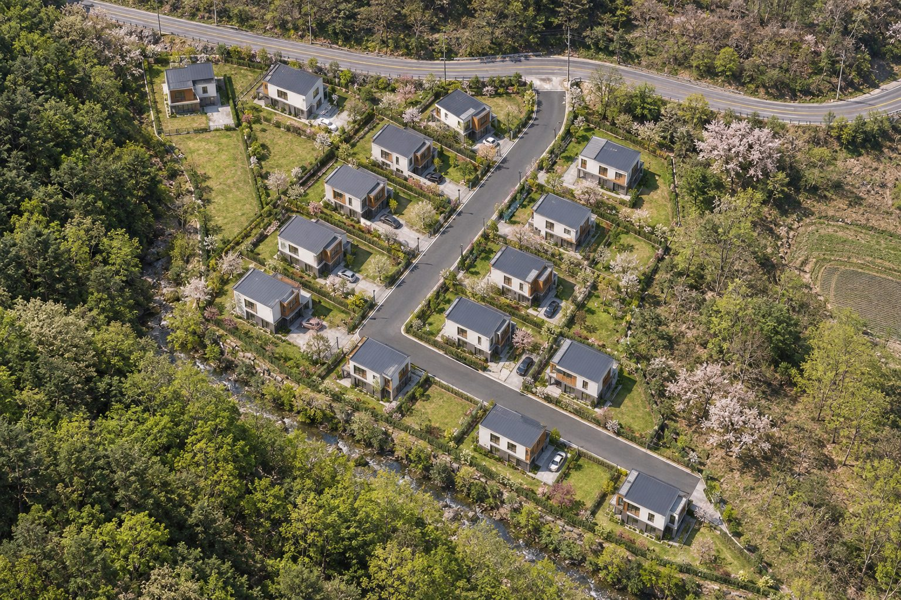

단지조경
진입로를 따라 13가구, 전면 도로변에 2가구. 열다섯 가구가 저마다의 마당을 두고 자리하는 단지입니다.

청명산 숲을 배경으로
단지 서쪽으로 청명산 숲이 이어지고, 남서쪽 경계를 따라 수로가 흐릅니다.
공용 정원 대신, 집마다 마당
필지마다 독립된 마당을 두어 잔디나 텃밭, 데크를 꾸밀 수 있습니다. 세부 조경 계획은 설계 확정 후 안내합니다.
진입로를 따라 13가구, 전면 도로변에 2가구. 열다섯 가구가 저마다의 마당을 두고 자리하는 단지입니다.

단지 서쪽으로 청명산 숲이 이어지고, 남서쪽 경계를 따라 수로가 흐릅니다.
필지마다 독립된 마당을 두어 잔디나 텃밭, 데크를 꾸밀 수 있습니다. 세부 조경 계획은 설계 확정 후 안내합니다.
타입·가격·일정은 설계 확정에 맞춰 순서대로 알려드립니다.